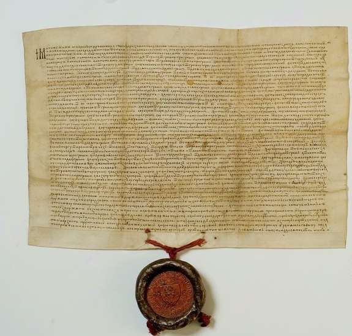
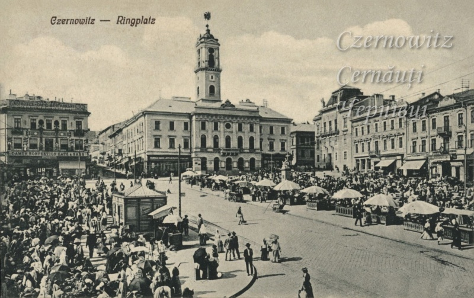
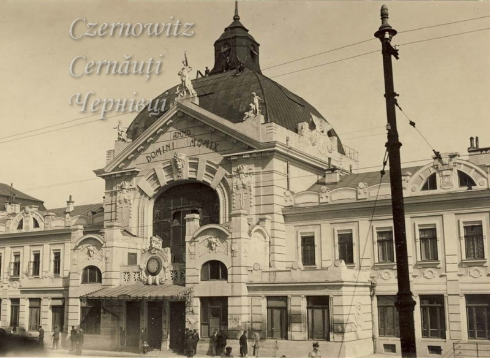
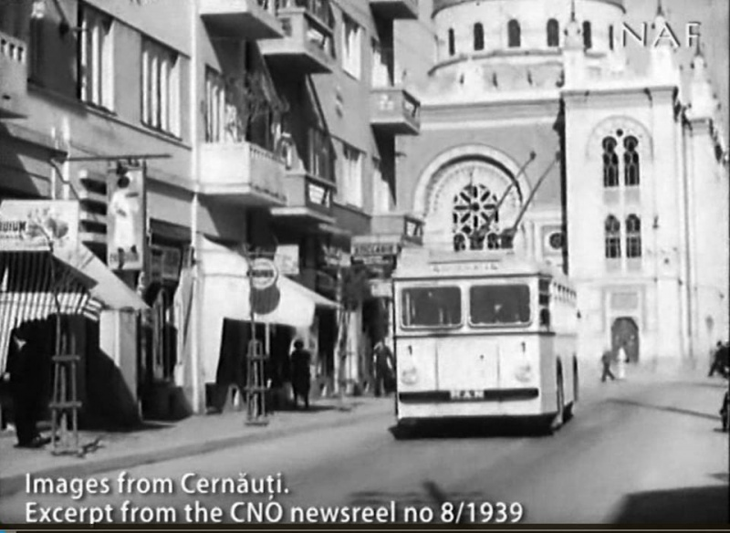
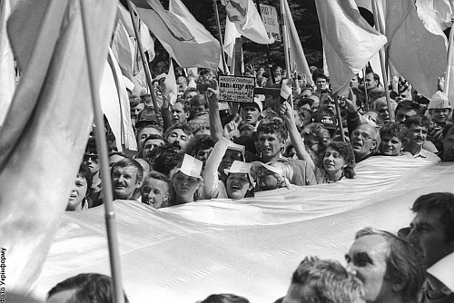
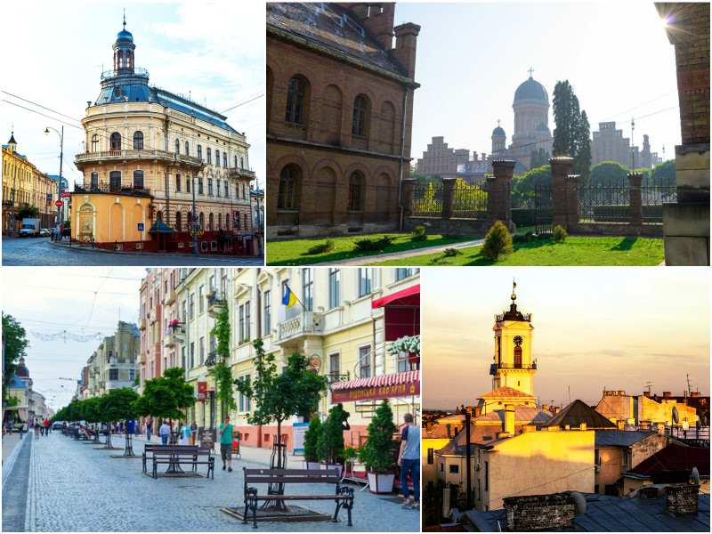

Кожне місто має стільки облич, скільки в ньому людей, будинків, пам'ятників, вулиць, парків, скверів.
Одні міста одразу з часу свого заснування займають визначне місце, інші з часом стверджують свою славу і значимість в історії.
Чернівці своєю історією, природною красою, дивовижною архітектурою, щедрою душею своїх мешканців давно зайняли визначне місце в реєстрі українських та східноєвропейських міст.Давньоруський період (X–XIII ст.)
Наприкінці Х ст. територія у межах сучасної Чернівецької області, яка тоді була заселена племінними об'єднаннями тиверців і хорватів, увійшла до складу Київської Русі, а зі створенням в ХІ ст. Галицького князівства до складу останнього і перебувала у ньому до середини XIV ст. Саме у цей час, імовірно в середині XII ст. (1153 р.), на лівому березі р. Прут було засновано фортецю для охорони торгового Берладського шляху, який вів із нижнього Подунав'я до Галича. Навколо дерево-земляної фортеці з часом виріс ремісничий посад з будинками зрубної конструкції. Це місто згадується серед інших в «Списку городів руських дальніх і ближніх» як Черн на Пруті. Можливо, ця назва походила від чорних дубових, перекладених чорноземом, стін фортеці. Очевидно, від слова Черн походить й назва міста Чернівці. У середині XIII ст. (1259 р.) ця фортеця була знищена на вимогу монгольського воєводи Бурундая, а мешканці перебралися на правий берег р. Прут, де заснували нове поселення в районі сучасних вулиць Сагайдачного і Барбюса. На правому березі річки, на горі Цецина, було споруджено фортецю-кам'яну вежу. (донжон).
Молдавсько–турецький період (XIV ст. – 1774 р.)
З середини XIV ст. край увійшов до складу новозаснованого Молдовського князівства. На той час припадає перша письмова згадка про Чернівці у грамоті молдавського господаря Олександра Доброго «Уставництво о митах» від 8 жовтня 1408 року, в якій Чернівці згадуються як митний пункт. Тоді через місто проходив торговий шлях, що сполучав Львів з Північним та Західним Причорномор'ям. 3 1457 р. Чернівці стали центром волості. Вперше, як місто, Чернівці згадані в грамоті господаря Штефана Великого від 15 березня 1490 р. У 1538 р. місто у складі Молдовського князівства потрапило під зверхність Османської імперії.
За часів Хмельниччини до Чернівців навідувалися козацькі й татарські загони, опришки під проводом Дитинки. У січні 1657 р. до Чернівців прибув козацький корпус у складі Київського, Переяславського та Білоцерківського полків на чолі з наказним гетьманом А. Ждановичем. У Чернівцях до корпусу приєдналися молдовські та валаські загони, які вирушили спільно на Польщу. За правління короля Яна III Собеського Чернівці перебували переважно під владою Речі Посполитої. 3 1709 по 1714 рр. в околицях міста хазяйнували шведи та польські конфедерати. У 1714-1719 рр. у Чернівцях стояв турецький гарнізон. З того часу в старій частині міста знаходиться Турецька криниця найдавніша комунальна споруда міста.

Найкращий опис Чернівців тих часів залишив чернець-єзуїт Й. Боскович, який супроводжував англійського посланця Портера і зробив у липні 1762 р. запис у своєму щоденнику. Він відзначав, що населення міста складалося з православних та євреїв, які мешкали у 200 хатинах. У Чернівцях було три дерев'яні православні церкви: Успіня Пресвятої Богородиці, Св. Миколая, Св. Параскеви. Також у місті діяла дерев'яна синагога, а самі євреї жили власною общиною (кагалом).
Австрійський період (1774 - 1918)
Після російсько-турецької війни 1768-1774 pp. y північні волості Молдови були уведені австрійські війська, які зайняли й Чернівці. У 1775 р. згідно з конвенцією, підписаною між Османською Портою та Австрійською імперією, місто і вся Буковина увійшли до складу останньої. У «габсбурзький» період своєї історії (до листопада 1918 р.) Чернівці власне й отримали свій образ центральноєвропейського міста з характерним для Австро-Угорщини типом архітектури та міської інфраструктури. У цьому найвіддаленішому на схід місті імперії сформувався космополітичний, поліетнічний склад населення. Клімат «габсбурзьких» Чернівців творили різноманітні релігійні та культурні традиції українців, румунів, поляків, євреїв, німців (німецький вплив був особливо сильним).
Чернівці почали процвітати у 1778 р., коли герцог Карл фон Енценберг був призначений другим главою військової адміністрації міста. Він запросив сюди багато купців, ремісників та промисловців для того, щоби вони допомогли розвивати торгівлю та виробництво. Нового імпульсу розвитку міста надав Петрівський ярмарок, який проводився 1-15 липня починаючи з 1786 року (сьогодні традиція Петрівського ярмарку відновлена). На початку ХІХ ст. Чернівці вже нагадували справжнє місто.
26 лютого 1861 р. після проголошення Буковини автономним коронованим краєм (герцоґством) Чернівці стають його столицею. 8 березня 1864 р. місту було надано право повного самоврядування і були обрані перші члени міської ради. Першим автономним бургомістром міста було обрано Якова фон Петровича.
Особливо помітний слід в історії Чернівців залишив другий автономний бургомістр Антон Кохановський фон Ставчан (1866-1874 та 1887- 1905 рр.). Якраз з його іменем пов'язане становлення Чернівців як міста європейського типу. У 1866 р. місто з'єдналося з Європою (через Львів) залізницею. З середини ХІХ ст., коли залізницю подовжили до румунського міста Ясси, Чернівці стали прикордонною вузловою станцією, яка працювала на економіку міста і краю. Потяги везли на Північ і Південь, Схід і Захід ліс, цукор, худобу, вовну, сіль. В місті були відкриті товарна біржа, палата торгівлі і ремесел, поштамт, телеграф, Буковинський ощадний та філії іноземних банків. В Чернівці прийшов європейський капітал, почався будівельний бум. Прокладені і вимощені нові вулиці, побудований водопровід і каналізація. 4 жовтня 1875 р. Чернівці стали науково-освітнім центром, тоді указом цісаря Австро-Угорщини Франса Йосифа було відкрито університет. Святом для всіх чернівчан став пуск у 1897 р. першого трамваю. Великого розмаху набуло житлове будівництво, з'являються будівлі для адміністративно- громадських потреб: лікарні, школи, готелі, клуби з бальними залами, народні доми. У 1908 році споруджується нова ошатна будова залізничного вокзалу, щоби показати гостям міста, що вони приїхали не в якусь провінцію, а до «маленького Відня над Прутом».
У роки Першої світової війни Чернівці потрапили в центр бойових дій, у результаті чого в місті тричі за роки війни змінювалася влада і лише 3 серпня 1917 р. остаточно відновилася влада австрійського імператора. Внаслідок поразки у війні розпочався розпад Австро-Угорщини і 3 листопада 1918 р. українці Буковини прийняли ухвалу про створення Західно-Української держави та побажали «прилучення української часті австрійської землі до України».
Румунський період (1918 - 1940)
11 листопада 1918 р. Чернівці були окуповані румунською армією, а вже 30 грудня король Румунії Фердинанд І підписав законо-декрет про об'єднання Буковини з Румунією. З 1920 р. в місті спостерігаються ознаки господарської стабілізації: відкриваються банківські відділення, з'являються нові промислові підприємства. У роки економічної кризи 1929-1933 рр. з метою забезпечення безробітних роботою міська влада розгортає житлове будівництво. Тоді дещо змінився архітектурний стиль міста: якщо в ХІХ ст. характерним був класицизм, а на початку ХХ ст. модерн, то в 30-х роках ХХ ст. місто забудовувалося будівлями в стилі конструктивізму. У ряді громадських будівель використовувався стиль «неороминеск». У травні 1933 р. король Румунії Кароль II в присутності представників влади та великої кількості буковинців урочисто відкрив аеропорт. Перші регулярні авіарейси з'єднали Чернівці з Варшавою, Бухарестом і Москвою. У лютому 1939 року в Чернівцях почав курсувати тролейбус.
Радянський період та настання незалежності України (1940 - 1991)
28 червня 1940 р. згідно з нацистсько-радянським пактом Молотова-Ріббентропа Північна Буковина з Чернівцями відійшла від Румунії до Радянської України. Відповідно до цього пакту з Чернівців було репатрійоване майже усе етнічне німецьке населення, що нанесло місцевому поліетнічному колориту непоправної шкоди. 2 серпня 1940 р. було створено Чернівецьку область у складі УРСР.
У роки Другої світової війни під час німецької окупації 1941-1944 рр. до Чернівців повернулась румунська влада (Румунія тоді була союзником фашистської Німеччини). Війна не принесла значних руйнувань місту: були зруйновані кілька будинків на Центральній площі та Поштовій вулиці, підпалено Темпль. 29 березня 1944 р. до міста повернулась радянська влада.
За радянських часів місто розвивається і майже подвоює своє населення. У Чернівцях з'являються нові промислові підприємства, будуються житлові мікрорайони. Однак майже повністю втрачається унікальний місцевий колорит, а новозбудована архітектура — це типові зразки радянського містобудування. Завдяки тому, що Чернівці зростали за рахунок нових мікрорайонів, стара частина міста не була зачеплена новобудовами й тому зберегла свою недоторкану красу та цілісність.
Після здобуття Україною незалежності у 1991 р. місто поступово відновлює свій старий урбаністичний колорит та повертається до історичних коренів.
Незалежність України (1991 - сьогодні)
Після здобуття Україною незалежності у 1991 році, Чернівці стали важливим адміністративним, культурним та освітнім центром незалежної держави. З 1991 року в місті почався новий етап розвитку, орієнтований на демократизацію та євроінтеграцію.
У 2000-х роках місто почало поступово розвиватися завдяки інвестиціям у інфраструктуру та туризм. Відновлювалися історичні будівлі, розвивалася транспортна мережа, і збільшувалася кількість туристів, які відвідують Чернівці.
Починаючи з 2014 року, після Революції Гідності, місто активізувало свій курс на підтримку європейських цінностей та реформ. У зв'язку з російською агресією, Чернівці також відіграли важливу роль у підтримці внутрішньо переміщених осіб і гуманітарній допомозі.
Сьогодні, Чернівці залишаються одним із найважливіших культурних центрів України, де проходять численні культурні та мистецькі заходи, а також зберігається багата історична спадщина міста.